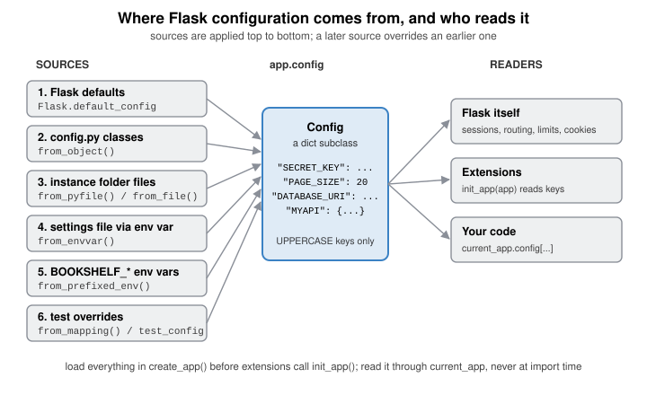

Configuration
|
This content was generated with the assistance of AI and should be verified against the official documentation before being relied on in production. |
This page is written against Flask 3.1.3 (released 2026-02-18) and Werkzeug 3.1.9, checked on 2026-10-07. Flask 3.2 was not
released on that date, so everything described as "3.2" is upcoming. The code uses Python 3.10+ syntax and was executed on
Python 3.13 with app.test_client(). Configuration is where a Flask application stops being a tutorial and starts being
deployable: the same code has to run on a laptop, in the test suite and in production with different databases, different
secrets and different safety settings. This page covers the object that holds those settings, every way of filling it, all
29 built-in keys, and the habits that keep secrets out of version control. The scenario is the Bookshelf catalogue that
the other pages of this section build on.
How Flask Configuration Works
Every Flask application has one config attribute, an instance of flask.Config. It is a plain dict subclass with two
additions: a set of from_* loader methods and a root_path that relative file names are resolved against. There is no
schema, no validation and no type conversion in the object itself, which makes it flexible and also means that a typo in a
key name is silently accepted.
Three facts explain nearly every configuration surprise:
-
Only uppercase keys count.
from_object()copies only uppercase attributes, andfrom_mapping()skips keys that are not uppercase.config["page_size"] = 20works because it is a dict, but no loader will ever produce it, and by convention nobody reads it. -
The defaults live on the class.
Flask.default_config(anImmutableDict) holds the 29 built-in keys. Each new app copies it into its ownconfig, and replacesDEBUGwith the value of theFLASK_DEBUGenvironment variable. -
Flask reads the config when it needs it, not once at start-up. The session interface reads the cookie settings when it saves a session, the request class reads
MAX_CONTENT_LENGTHwhen a body is parsed, andurl_forreadsSERVER_NAMEwhen it builds an external URL. A few keys are the exception because their effect is baked in earlier (DEBUGin particular, see Debug Mode and the Removed ENV).
The libraries underneath are small. Werkzeug supplies import_string (used when from_object() receives a dotted name)
and the cookie, host and body-size handling that several keys control. The standard library supplies json (the default
parser for from_prefixed_env()), tomllib (the TOML parser Flask’s documentation uses with from_file()) and
os.environ. Click and python-dotenv supply the command line and .env handling described in Dotenv Files and the flask Command.

The sections below follow the loaders in the order a typical create_app() calls them.
The Config Object
app.config behaves exactly like a dictionary, so reading, assignment, update() and get() all work:
import secrets
from flask import Flask
app = Flask(__name__)
app.config["TESTING"] = True
app.config.update(
SECRET_KEY=secrets.token_hex(),
MAX_CONTENT_LENGTH=2 * 1024 * 1024,
BOOKSHELF_PAGE_SIZE=20,
)
assert app.config["MAX_CONTENT_LENGTH"] == 2_097_152
assert app.config.get("BOOKSHELF_MISSING", "fallback") == "fallback"
print(app.config["BOOKSHELF_PAGE_SIZE"])Four settings are also exposed as attributes of the application object. Reading or writing the attribute reads or writes the config key, so both spellings stay in sync:
| Attribute | Config key | Notes |
|---|---|---|
|
|
A |
|
|
Same forwarding; assigning it is equivalent to |
|
|
Always returns a |
|
|
A property whose setter also updates |
Flask 2.2 also deprecated attribute proxies for session_cookie_name, send_file_max_age_default, use_x_sendfile,
propagate_exceptions and templates_auto_reload, and Flask 2.3 removed them. Code that still writes
app.use_x_sendfile = True silently creates an unused attribute on current Flask; use the config key.
app.testing = False
assert app.config["TESTING"] is False
app.config["TESTING"] = True
assert app.testing is True
app.permanent_session_lifetime = 3600 # an int of seconds is accepted
print(repr(app.permanent_session_lifetime)) # a timedelta comes back
defaults = Flask.default_config
print(len(defaults), "built-in keys")
assert Flask("fresh").config["DEBUG"] is False # unless FLASK_DEBUG is setSource: Flask API: Configuration
Every Loader at a Glance
| Method | Reads | Typical use |
|---|---|---|
|
Uppercase attributes of a module, class or instance, or an import string for one |
Defaults and the Dev / Test / Prod classes kept in version control. |
|
A Python file executed as a module; uppercase names become keys |
Per-deployment overrides in the instance folder. |
|
The file whose path is stored in an environment variable (then |
"Point the app at a settings file" in a service definition. |
|
Any file a loader function can parse into a mapping (JSON, TOML) |
Data-only configuration; |
|
Every environment variable that starts with the prefix and an underscore |
Containers, Kubernetes, Heroku-style platforms, secrets injected by the orchestrator. |
|
A dict or keyword arguments; non-uppercase keys are skipped |
Test overrides and programmatic defaults. |
|
Not a loader: returns the keys that share a prefix as a dict of lowercase names |
Passing a group of settings to a constructor as keyword arguments. |
Source: Flask API: flask.Config
from_object: Modules, Classes and Instances
from_object() takes an object or a dotted import string, and copies every uppercase attribute. It is meant for
defaults, the values that are safe to commit. The class-based pattern in Class-Based Dev, Test and Prod Configurations builds on it.
import sys
import tempfile
from pathlib import Path
workdir = Path(tempfile.mkdtemp(prefix="bookshelf-config-"))
(workdir / "bookshelf_defaults.py").write_text(
"PAGE_SIZE = 20\n"
"SESSION_COOKIE_SAMESITE = 'Lax'\n"
"not_a_setting = 'ignored because it is lowercase'\n"
)
sys.path.insert(0, str(workdir))
app = Flask("from_object_demo")
app.config.from_object("bookshelf_defaults") # import string
assert app.config["PAGE_SIZE"] == 20
assert "not_a_setting" not in app.config
class Limits:
MAX_CONTENT_LENGTH = 1_000_000
MAX_FORM_PARTS = 200
app.config.from_object(Limits) # the class itself, not an instance
assert app.config["MAX_FORM_PARTS"] == 200Source: Flask API: Config.from_object
from_object() does not instantiate a class. A @property on a class is therefore a property object, not a value, unless you
pass an instance. Passing an instance is how derived values stay in one place:
class DerivedConfig:
DB_SERVER = "localhost"
@property
def DATABASE_URI(self): # the name must be uppercase
return f"postgresql://bookshelf@{self.DB_SERVER}/bookshelf"
class StagingConfig(DerivedConfig):
DB_SERVER = "db.staging.internal"
app.config.from_object(StagingConfig()) # note the parentheses
assert app.config["DATABASE_URI"] == "postgresql://bookshelf@db.staging.internal/bookshelf"Two further points from the official documentation: dict objects do not work with from_object() because dictionary
keys are not attributes (use from_mapping()), and the documentation recommends from_object() for defaults and
from_pyfile() for the real, deployment-specific configuration.
from_pyfile and from_envvar: Python Files
from_pyfile() executes the file as a module and then applies from_object() to it, so only uppercase names survive. A
relative file name is resolved against the config’s root_path, which is the application’s root folder by default and the
instance folder when instance_relative_config=True (see The Instance Folder). silent=True turns "file not found" (and "is a
directory") into a False return value instead of an exception, which is what an optional override file wants.
local_file = workdir / "local.cfg"
local_file.write_text("PAGE_SIZE = 50\nBOOKSHELF_FEATURES = ['reviews', 'covers']\n")
app = Flask("from_pyfile_demo")
assert app.config.from_pyfile(str(local_file)) is True
assert app.config["PAGE_SIZE"] == 50
assert app.config.from_pyfile("does-not-exist.cfg", silent=True) is False
try:
app.config.from_pyfile("does-not-exist.cfg")
except FileNotFoundError as error:
print("loud failure:", error)Source: Flask API: Config.from_pyfile
from_envvar() is from_pyfile(os.environ[name]) with a better error message. If the variable is unset it raises
RuntimeError unless silent=True:
import os
from unittest import mock
app = Flask("from_envvar_demo")
with mock.patch.dict(os.environ, {"BOOKSHELF_SETTINGS": str(local_file)}):
assert app.config.from_envvar("BOOKSHELF_SETTINGS") is True
assert app.config["PAGE_SIZE"] == 50
with mock.patch.dict(os.environ, clear=False):
os.environ.pop("BOOKSHELF_SETTINGS", None)
assert app.config.from_envvar("BOOKSHELF_SETTINGS", silent=True) is False
try:
app.config.from_envvar("BOOKSHELF_SETTINGS")
except RuntimeError as error:
print(error)A Python configuration file is executable code. Anyone who can write to it can run arbitrary code with the application’s privileges, so the file must be writable only by the deployment user. If that is a concern, prefer the data formats in the next section.
from_file: JSON and TOML
from_file(filename, load=..., text=True) opens the file, calls load(file) and passes the resulting mapping to
from_mapping(). It was added in Flask 2.0 and replaced from_json(), which was removed in 2.1. text=False (added in 2.3)
opens the file in binary mode, which tomllib.load requires.
import json
import tomllib
(workdir / "config.json").write_text(json.dumps({"PAGE_SIZE": 30, "ignored": True}))
(workdir / "config.toml").write_text(
'PAGE_SIZE = 40\n'
'COVER_SIZES = [120, 240, 480]\n'
'\n'
'[MAIL]\n'
'HOST = "smtp.example.com"\n'
'PORT = 587\n'
)
app = Flask("from_file_demo")
app.config.from_file(str(workdir / "config.json"), load=json.load)
assert app.config["PAGE_SIZE"] == 30 and "ignored" not in app.config
app.config.from_file(str(workdir / "config.toml"), load=tomllib.load, text=False)
assert app.config["PAGE_SIZE"] == 40
assert app.config["MAIL"] == {"HOST": "smtp.example.com", "PORT": 587} # a nested table stays a dictBecause the mapping goes through from_mapping(), only its top-level uppercase keys are kept. The nested table [MAIL] is
stored as one dict value; its inner keys (HOST, PORT) are not filtered, and a lowercase [mail] table would be dropped.
YAML is not in the standard library, but any parser with a load(file) signature works in the same way.
from_mapping and update
from_mapping() is update() that ignores lowercase keys, and it also accepts keyword arguments. It always returns True.
It is what test fixtures and create_app(test_config) use:
app = Flask("from_mapping_demo")
app.config.from_mapping({"PAGE_SIZE": 10, "page_size": 99}, TESTING=True)
assert app.config["PAGE_SIZE"] == 10
assert "page_size" not in app.config
assert app.config["TESTING"] is TrueSource: Flask API: Config.from_mapping
from_prefixed_env: Environment Variables
from_prefixed_env() was added in Flask 2.1. It loads every environment variable that starts with the prefix plus an
underscore (default FLASK_), drops the prefix to form the key, and passes the value through json.loads. If parsing
raises, the value stays a string. Variables are processed in sorted order, and a double underscore creates nested
dictionaries, with missing intermediate dictionaries created on the way.
env = {
"BOOKSHELF_PAGE_SIZE": "25", # JSON number -> int
"BOOKSHELF_MAIL_ENABLED": "false", # JSON false -> bool
"BOOKSHELF_FEATURES": '["sse", "i18n"]', # JSON list
"BOOKSHELF_NAME": "Bookshelf", # not JSON -> stays a str
"BOOKSHELF_MYAPI__credentials__username": "reader", # nested keys with __
"OTHER_PAGE_SIZE": "999", # wrong prefix -> ignored
}
app = Flask("from_prefixed_env_demo")
with mock.patch.dict(os.environ, env):
app.config.from_prefixed_env("BOOKSHELF")
assert app.config["PAGE_SIZE"] == 25
assert app.config["MAIL_ENABLED"] is False
assert app.config["FEATURES"] == ["sse", "i18n"]
assert app.config["NAME"] == "Bookshelf"
assert app.config["MYAPI"] == {"credentials": {"username": "reader"}}The default prefix is the sharpest edge in the whole configuration API, because FLASK_ is also the prefix of the
variables the flask command reads (FLASK_APP, FLASK_DEBUG, FLASK_RUN_PORT, FLASK_SKIP_DOTENV). A bare
from_prefixed_env() drags all of them into app.config:
collision = {"FLASK_APP": "bookshelf", "FLASK_RUN_PORT": "8000", "FLASK_DEBUG": "1"}
app = Flask("collision_demo")
with mock.patch.dict(os.environ, collision):
app.config.from_prefixed_env() # default prefix FLASK
print(app.config["APP"], app.config["RUN_PORT"], app.config["DEBUG"])The extra keys APP and RUN_PORT are harmless but they pollute the config, and FLASK_DEBUG=1 becomes DEBUG = 1, an
integer rather than a bool. Use your own prefix (BOOKSHELF here) for application settings. Other pitfalls:
-
Booleans are strict JSON. Only lowercase
trueandfalseconvert.False,TRUE,0as a flag ornostay strings (0becomes the integer0, which is falsy), and any non-empty string is truthy in Python, soBOOKSHELF_MAIL_ENABLED=Falseenables mail. Passloads=with a stricter function if that matters to you. -
Windows upper-cases environment variable names, so nested keys such as
MYAPI__credentials__usernamearrive asMYAPI__CREDENTIALS__USERNAME. The official documentation points to a dedicated library such as Dynaconf for case-insensitive handling and merging. -
Values with JSON syntax inside them are parsed. A password such as
123456becomes an integer andnullbecomesNone. Pass a stricterloads=function, or store such a value as a JSON string, wrapped in an extra pair of quotes. -
Nothing is loaded automatically. Flask never calls
from_prefixed_env()for you, inflask runor in a production server; your factory does.
get_namespace() is the inverse convenience: it collects the keys that share a prefix into a dictionary of lowercase names,
which maps directly onto a constructor’s keyword arguments.
app = Flask("namespace_demo")
app.config.update(
MAIL_HOST="smtp.example.com",
MAIL_PORT=587,
MAIL_USE_TLS=True,
)
mail_settings = app.config.get_namespace("MAIL_")
assert mail_settings == {"host": "smtp.example.com", "port": 587, "use_tls": True}Source: Flask API: Config.get_namespace
Class-Based Dev, Test and Prod Configurations
The pattern the official documentation calls "an interesting pattern" is the one most projects settle on: a Config base
class with shared defaults, one subclass per environment, and a name that selects between them. Everything environment
specific lives in one reviewable file, inheritance removes repetition, and nothing in it is secret.
For the Bookshelf the base class holds the settings that never change. The development class is permissive. The testing
class turns on TESTING and uses an in-memory database. The production class tightens cookies and the accepted hosts, and
it deliberately has no SECRET_KEY, so that forgetting to inject one is a start-up error rather than a weak session.
import os
import secrets
from flask import Flask
class BaseConfig:
"""Defaults that are safe to commit and identical everywhere."""
BOOKSHELF_PAGE_SIZE = 20
MAX_CONTENT_LENGTH = 5 * 1024 * 1024 # 5 MiB; cover images are small
SESSION_COOKIE_HTTPONLY = True # the default, stated on purpose
SESSION_COOKIE_SAMESITE = "Lax"
DATABASE_URI = "sqlite:///bookshelf.db"
class DevelopmentConfig(BaseConfig):
# Random per process: sessions end when the dev server restarts, and no
# secret ever appears in the repository. Debug mode is switched on with
# `flask --app bookshelf run --debug`, not here.
SECRET_KEY = secrets.token_hex()
class TestingConfig(BaseConfig):
TESTING = True
SECRET_KEY = secrets.token_hex()
DATABASE_URI = "sqlite:///:memory:"
class ProductionConfig(BaseConfig):
# No SECRET_KEY on purpose: it must arrive from the environment or the instance folder.
SESSION_COOKIE_SECURE = True
PREFERRED_URL_SCHEME = "https"
TRUSTED_HOSTS = ["bookshelf.example.com", ".bookshelf.example.com"]
CONFIGS = {
"development": DevelopmentConfig,
"testing": TestingConfig,
"production": ProductionConfig,
}create_app() then layers the sources in a fixed order, from the most general to the most specific, so that every later
source wins. The environment-specific class is chosen by a variable, and the default when it is missing is production, the
safe direction to fail in.
def create_app(test_config=None):
app = Flask(__name__, instance_relative_config=True)
name = os.environ.get("BOOKSHELF_CONFIG", "production")
app.config.from_object(CONFIGS[name]) # 1. environment class
app.config.from_pyfile("config.py", silent=True) # 2. instance/config.py (per deployment)
app.config.from_prefixed_env("BOOKSHELF") # 3. environment variables win
if test_config is not None:
app.config.from_mapping(test_config) # 4. tests override everything
secret = app.config.get("SECRET_KEY")
if not isinstance(secret, str) or len(secret) < 32:
raise RuntimeError("SECRET_KEY is missing or too short; see the Secrets section")
return appSource: Flask: Application Factories
built-in defaults"] --> B["from_object(BaseConfig)
shared project defaults, in version control"] B --> C["from_object(Development / Testing / Production)
selected by BOOKSHELF_CONFIG"] C --> D["from_pyfile or from_file in the instance folder
per-deployment values, not in version control"] D --> E["from_prefixed_env with prefix BOOKSHELF
variables injected by the platform"] E --> F["from_mapping(test_config)
tests override everything"] F --> G["app.config is final
extensions call init_app(app) after this point"]
Run the factory in the three situations that matter:
base_env = {k: v for k, v in os.environ.items() if not k.startswith("BOOKSHELF_")}
# 1. Production without a secret: refuses to start.
with mock.patch.dict(os.environ, base_env, clear=True):
try:
create_app()
except RuntimeError as error:
print("refused:", error)
# 2. Production with the secret injected by the platform.
injected = {**base_env, "BOOKSHELF_SECRET_KEY": secrets.token_hex(), "BOOKSHELF_BOOKSHELF_PAGE_SIZE": "50"}
with mock.patch.dict(os.environ, injected, clear=True):
prod = create_app()
assert prod.config["SESSION_COOKIE_SECURE"] is True
assert prod.config["BOOKSHELF_PAGE_SIZE"] == 50 # the env var overrode the class value
# 3. Development and tests.
with mock.patch.dict(os.environ, {**base_env, "BOOKSHELF_CONFIG": "development"}, clear=True):
dev = create_app()
assert dev.config["SESSION_COOKIE_SECURE"] is False
test_app = create_app({"BOOKSHELF_PAGE_SIZE": 2, "SECRET_KEY": secrets.token_hex()})
assert test_app.config["BOOKSHELF_PAGE_SIZE"] == 2Two details of that code are easy to miss. Because the prefix is stripped, BOOKSHELF_SECRET_KEY sets SECRET_KEY, and the
setting named BOOKSHELF_PAGE_SIZE needs the variable BOOKSHELF_BOOKSHELF_PAGE_SIZE. Choose key names with that in mind
(a short prefix on custom keys keeps them from colliding with extension keys, but the env var is then doubled). The selector
variable BOOKSHELF_CONFIG itself is also loaded by from_prefixed_env(), as a harmless CONFIG key.
The application factory itself, and how it fits into the project layout, is covered on the sibling page about the application factory and project layout.
The Instance Folder
Some configuration must not travel with the code: database passwords, API tokens, a per-customer SECRET_KEY. Flask 0.8
introduced the instance folder for it. It is a directory next to the application that is deliberately excluded from
version control and from the installed package, and it is also the right place for files the app writes at run time, such as
a SQLite database or uploaded cover images.
| How the app is laid out | Default instance_path |
|---|---|
An uninstalled module ( |
|
An uninstalled package ( |
|
An installed module or package |
|
Explicit |
Exactly that path; it must be absolute or Flask raises |
Pass instance_relative_config=True and relative file names given to from_pyfile() and from_file() resolve against the
instance folder instead of the application root. app.open_instance_resource(name, mode) opens files there, and
app.instance_path is the directory itself.
instance_dir = workdir / "instance"
instance_dir.mkdir()
(instance_dir / "config.py").write_text("BOOKSHELF_PAGE_SIZE = 75\nDATABASE_URI = 'sqlite:///instance.db'\n")
app = Flask("instance_demo", instance_path=str(instance_dir), instance_relative_config=True)
assert app.config.root_path == str(instance_dir) # relative names now resolve here
app.config.from_pyfile("config.py") # no path needed
assert app.config["BOOKSHELF_PAGE_SIZE"] == 75
with app.open_instance_resource("uploads.log", "w") as log:
log.write("cover uploaded\n")
assert (instance_dir / "uploads.log").read_text() == "cover uploaded\n"Practical rules for the instance folder:
-
Add
instance/to.gitignoreand to.dockerignore. In a container, mount it (or the individual secret files) as a volume rather than baking it into the image. -
When the project is installed as a package (
pip install .rather thanpip install -e .), the automatic path moves to$PREFIX/var/bookshelf-instance, which surprises people who developed against./instance. Setinstance_pathexplicitly, or read it from an environment variable, if production must not depend on the install layout. -
Flask 2.3.3 refactored how the root and instance paths are determined, and 2.1.3 fixed the instance path for namespace packages, so both behave consistently on current releases.
-
A config file in the instance folder is still executable Python when loaded with
from_pyfile(); give it restrictive file permissions.
Secrets: SECRET_KEY, Rotation and What Never to Commit
SECRET_KEY signs the session cookie and is available to extensions (Flask-WTF uses it for CSRF tokens, for example). The
default session is signed, not encrypted: the client can read what is in it but cannot change it without the key. Whoever
holds the key can forge any session, including an administrator’s, so the key is the most sensitive value in the config.
Generate it with the standard library, as the official documentation does:
python -c 'import secrets; print(secrets.token_hex())'secrets.token_hex() returns 64 hexadecimal characters (32 random bytes). Rules that follow from that:
-
Never hard-code or commit it. Not in
config.py, not in a Dockerfile, not in an example. The Flask documentation says not to reveal it when posting questions or committing code. Books and tutorials that assign the placeholder stringsecret_keytoapp.secret_keyor a literal "dev" value are showing what not to do; a leaked or guessable key lets an attacker mint valid sessions. -
Inject it per environment through an environment variable, a secret file in the instance folder, or the orchestrator’s secret store (Kubernetes secrets, Docker secrets, a cloud secret manager), and load it with
from_prefixed_env()orfrom_pyfile()as above. -
Use a different key per environment so a leak of the staging key does not compromise production.
-
Fail fast if it is missing, as
create_app()did above. Flask itself only fails later, when a view touchessessionand getsRuntimeError: The session is unavailable because no secret key was set, with a 500 response.
Keys must be rotated after a leak and ideally on a schedule. Flask 3.1 added SECRET_KEY_FALLBACKS, a list of old keys the
session interface will still accept when verifying a cookie, while new cookies are signed with the current SECRET_KEY.
That allows rotation without logging everyone out. Flask 3.1.1 fixed the order in which keys were tried, so use 3.1.1 or
newer. Extensions that read SECRET_KEY directly may not honour the fallbacks yet.
from flask import session
def make_app(secret, fallbacks=None):
rotating = Flask("rotation_demo")
rotating.config.update(SECRET_KEY=secret, SECRET_KEY_FALLBACKS=fallbacks or [])
@rotating.get("/login")
def login():
session["user"] = "ada"
return "ok"
@rotating.get("/me")
def me():
return session.get("user", "anonymous")
return rotating
old_key, new_key = secrets.token_hex(), secrets.token_hex()
first = make_app(old_key).test_client()
first.get("/login")
cookie = first.get_cookie("session").value # signed with the old key
without_fallback = make_app(new_key).test_client()
without_fallback.set_cookie("session", cookie)
assert without_fallback.get("/me").text == "anonymous" # everyone logged out
with_fallback = make_app(new_key, [old_key]).test_client()
with_fallback.set_cookie("session", cookie)
assert with_fallback.get("/me").text == "ada" # the old cookie still verifiesRemove an old key from the list after the longest session lifetime (PERMANENT_SESSION_LIFETIME, 31 days by default) has
passed, because every extra key is another verification attempt per request.
Finally, secrets other than SECRET_KEY (database passwords, JWT signing keys, API tokens for third-party services) follow
the same rules, and should never be logged. Do not print app.config in a log line or an error page: it contains them.
Twelve-Factor Configuration
The twelve-factor app methodology says that configuration which varies between deploys belongs
in the environment, not in the code, and that config files named after environments (development.py, production.py)
scale badly because the number of environments only grows. Flask supports both styles, and the layering in create_app()
above is a pragmatic mix:
| What | Where it lives | Why |
|---|---|---|
Defaults that every environment shares, feature flags with sane values |
|
Reviewable and testable; no secrets. |
Environment shape (cookies secure or not, debug tooling, accepted hosts) |
One small class per environment, chosen by a variable |
Few environments (dev, test, prod); the differences are structural, not per-customer. |
Anything that differs per deployment: database URL, secret key, third-party credentials, hostnames |
Environment variables read with |
Changes without rebuilding or redeploying code; the platform manages them. |
Anything the platform cannot express as a string (lists, nested tables) |
JSON in a variable, a |
Keeps structure out of fragile string parsing. |
The same shape appears elsewhere on this site: FastAPI uses a typed settings class, covered in Settings, Lifespan & Background Tasks, and Django uses a settings module, covered in Settings & Configuration. Flask gives you the dictionary and leaves the structure to you; if you want typed, validated settings, parse the config once in the factory (a small function, a dataclass or a validation library) and fail at start-up when it is wrong.
Debug Mode and the Removed ENV
DEBUG is the one key that is special. Its default is computed when the application object is created: Flask reads the
FLASK_DEBUG environment variable (anything except an empty value, 0, false or no, compared case-insensitively, turns
it on). The flask run --debug option sets that variable early enough for everything to see it. The official documentation
says setting DEBUG in code or in a config file is strongly discouraged, because flask run cannot read it early, and
extensions or the reloader may already have configured themselves from the earlier value.
for value, expected in [("1", True), ("true", True), ("0", False), ("false", False), ("no", False), ("", False)]:
with mock.patch.dict(os.environ, {"FLASK_DEBUG": value}):
assert Flask("debug_demo").config["DEBUG"] is expected, value
app = Flask("debug_setter_demo")
assert app.jinja_env.auto_reload is False
app.debug = True # setter also touches the Jinja environment
assert app.config["DEBUG"] is True and app.jinja_env.auto_reload is Trueflask --app bookshelf run --debug # interactive debugger and reloader
FLASK_DEBUG=1 flask --app bookshelf run # the same, through the environmentDebug mode enables the Werkzeug debugger, which can execute arbitrary Python from the browser. Never enable it on a server that anyone else can reach. The development server and the debugger are not production tools; the deployment pages of this section cover Gunicorn, Waitress and a reverse proxy instead.
The old development-versus-production switch is gone. FLASK_ENV, the ENV config key and the app.env attribute were
deprecated in Flask 2.2 ("debug mode and development are now the same thing") and removed in 2.3. Tutorials and Dockerfiles
that still export FLASK_ENV=development do nothing on current Flask: the variable is ignored, no error is raised, and
debug mode is not enabled. Use --debug or FLASK_DEBUG. The same release also removed PRESERVE_CONTEXT_ON_EXCEPTION
(already gone in 2.2).
TESTING is the other mode switch. It propagates exceptions to the test client instead of turning them into 500 responses,
and extensions may relax behaviour that is awkward in tests. PROPAGATE_EXCEPTIONS (implicitly true when TESTING or
DEBUG is on) and the two trap keys fine-tune that, see the key tables below.
Dotenv Files and the flask Command
If python-dotenv is installed (pip install "flask[dotenv]" or pip install python-dotenv), the flask command and
app.run() load .flaskenv and .env from the current directory or the nearest parent that has them. Precedence, from
highest to lowest: variables already in the real environment, a file given with --env-file (or -e, which since Flask
3.1 also overrides the default files), then .env, then .flaskenv. .flaskenv is meant to be committed and hold public
values (FLASK_APP, FLASK_RUN_PORT); .env holds private values and must be git-ignored. FLASK_SKIP_DOTENV=1 disables
the automatic loading, which is useful when a project runner already loaded the files.
# .flaskenv (committed: public values only)
FLASK_APP=bookshelf
FLASK_RUN_PORT=8000
BOOKSHELF_CONFIG=development
# .env (git-ignored: private values)
BOOKSHELF_SECRET_KEY=paste-the-output-of-secrets.token_hex-here
BOOKSHELF_DATABASE_URI=postgresql://bookshelf@localhost/bookshelfTwo limits matter. The files are loaded only by the flask command and app.run(); a production server such as Gunicorn
never reads them, so production must receive real environment variables (or call flask.cli.load_dotenv() itself, which the
documentation allows). And any variable named FLASK_<COMMAND>_<OPTION> sets that command’s option, so FLASK_RUN_PORT=8000
equals flask run --port 8000. Loading a file manually looks like this; existing environment variables are never overwritten:
from flask.cli import load_dotenv
env_file = workdir / "bookshelf.env"
env_file.write_text("BOOKSHELF_DEMO_FLAG=from-file\n" "BOOKSHELF_DEMO_KEPT=from-file\n")
with mock.patch.dict(os.environ, {"BOOKSHELF_DEMO_KEPT": "from-real-env"}):
loaded = load_dotenv(env_file, load_defaults=False)
assert loaded is True
assert os.environ["BOOKSHELF_DEMO_FLAG"] == "from-file"
assert os.environ["BOOKSHELF_DEMO_KEPT"] == "from-real-env" # real environment wins
os.environ.pop("BOOKSHELF_DEMO_FLAG", None)Source: Flask API: flask.cli.load_dotenv
Every Built-In Configuration Key
Flask 3.1.3 defines 29 keys in Flask.default_config. The tables group them by purpose. "Since" gives the release that
introduced the key or its latest behaviour change when that matters.
Run mode and error handling
| Key | Default | Purpose | Since |
|---|---|---|---|
|
|
Debug mode: interactive debugger, reloader, template reloading. Set it with |
|
|
|
Testing mode: exceptions propagate instead of becoming 500 pages. Turn it on in your own tests. |
|
|
|
Re-raise exceptions instead of using the app’s error handlers. If |
0.7 |
|
|
Re-raise an |
0.8 |
|
|
Treat a missing key in |
0.8 |
|
|
Set to |
3.1 |
PROVIDE_AUTOMATIC_OPTIONS was added in 3.1.0 (the changelog lists it under 3.1.0); the configuration page’s version note
for it says "3.10", which is a typo in that page, not a release. In the upcoming 3.2, passing provide_automatic_options=True for a view
enables the automatic response for that view even when the key disables it; before that, a view could only opt out.
Secrets and sessions
| Key | Default | Purpose | Since |
|---|---|---|---|
|
|
Signs the session cookie; available to extensions. Long random |
|
|
|
List of old keys still accepted when verifying signatures, for rotation. The built-in session supports it; extensions may not. |
3.1 |
|
|
Lifetime of a permanent session ( |
|
|
|
Send the cookie with every response for permanent sessions, keeping them alive. Non-permanent sessions are unaffected. |
0.11 |
Session cookie attributes
| Key | Default | Purpose | Since |
|---|---|---|---|
|
|
Name of the cookie. Change it if another app on the same host already uses |
|
|
|
Value of the |
2.3 |
|
|
|
0.8 |
|
|
Hide the cookie from JavaScript. |
0.8 |
|
|
Mark the cookie |
0.8 |
|
|
|
1.0 |
|
|
Opt the cookie into partitioned (CHIPS) storage so third-party cookies in iframes do not leak between sites. Implies |
3.1 |
|
|
Warn when a cookie header is larger than this many bytes; larger cookies may be silently dropped by browsers. |
1.0 |
In Flask 2.3 SESSION_COOKIE_DOMAIN stopped falling back to SERVER_NAME, and the warnings about localhost and IP
addresses were removed. A book recipe that sets SERVER_NAME to scope the session cookie therefore no longer does so.
SESSION_COOKIE_PARTITIONED implies Secure because Werkzeug forces secure=True when it writes a partitioned cookie.
from flask import Flask, session
cookie_app = Flask("cookie_demo")
cookie_app.config.update(
SECRET_KEY=secrets.token_hex(),
SESSION_COOKIE_NAME="bookshelf_session",
SESSION_COOKIE_SECURE=True,
SESSION_COOKIE_SAMESITE="Lax",
SESSION_COOKIE_PARTITIONED=True,
)
@cookie_app.get("/visit")
def visit():
session["seen"] = True
return "ok"
response = cookie_app.test_client().get("/visit", base_url="https://bookshelf.example.com")
set_cookie = response.headers["Set-Cookie"]
print(set_cookie)
for attribute in ("HttpOnly", "Secure", "SameSite=Lax", "Partitioned"):
assert attribute in set_cookie, attribute
assert set_cookie.startswith("bookshelf_session=")Request limits
| Key | Default | Purpose | Since |
|---|---|---|---|
|
|
Maximum number of bytes read for a request; over it, a 413 |
0.6 |
|
|
Maximum size in bytes of any non-file field in a |
3.1 |
|
|
Maximum number of fields in a |
3.1 |
Set MAX_CONTENT_LENGTH for every application that accepts uploads; the default is no limit at the Flask level. The two form
limits arrived in 3.1 together with a "resource limits" section in the official security page, because a multipart body with
millions of tiny parts or one gigantic text field is a cheap denial-of-service. A reverse proxy should enforce a limit as
well. The next section shows all three limits and TRUSTED_HOSTS in action.
Hosts, URLs and routing
| Key | Default | Purpose | Since |
|---|---|---|---|
|
|
List of allowed |
3.1 |
|
|
The host (and port) the app is bound to. Needed to build external URLs with |
0.5 |
|
|
The path the app is mounted under, for URLs generated outside a request. Also the default session cookie path. Inside a request the dispatcher sets |
0.8 |
|
|
Scheme used for external URLs generated outside a request. |
0.9 |
TRUSTED_HOSTS is the Flask-level defence against Host-header attacks (poisoned password-reset links, cache poisoning). It is
the first key to add when moving to production, together with a reverse proxy that does not forward arbitrary Host values.
Behind a proxy, request.host is only correct if the proxy headers are handled, which the deployment page of this section
covers with ProxyFix.
from flask import url_for
limits_app = Flask("limits_demo")
limits_app.config.update(
SECRET_KEY=secrets.token_hex(),
MAX_CONTENT_LENGTH=100,
TRUSTED_HOSTS=["bookshelf.example.com", ".bookshelf.example.com"],
SERVER_NAME="bookshelf.example.com",
APPLICATION_ROOT="/library",
PREFERRED_URL_SCHEME="https",
)
@limits_app.get("/")
def index():
return "home"
@limits_app.post("/upload")
def upload():
from flask import request
return str(len(request.get_data()))
client = limits_app.test_client()
good_host = "https://bookshelf.example.com"
assert client.get("/", base_url=good_host).status_code == 200
assert client.get("/", base_url="https://evil.example.org").status_code == 400 # TRUSTED_HOSTS
assert client.get("/", base_url="https://www.bookshelf.example.com").status_code == 200
assert client.post("/upload", data=b"x" * 50, base_url=good_host).status_code == 200
assert client.post("/upload", data=b"x" * 500, base_url=good_host).status_code == 413 # MAX_CONTENT_LENGTH
with limits_app.app_context(): # no request: SERVER_NAME and friends are used
print(url_for("index", _external=True))
assert url_for("index", _external=True) == "https://bookshelf.example.com/library/"Files, templates and the rest
| Key | Default | Purpose | Since |
|---|---|---|---|
|
|
Serve files with the |
|
|
|
|
|
|
|
Reload templates when they change. If |
0.11 |
|
|
Log how each template was located, useful when the wrong file is picked up. |
0.11 |
Flask 3.1.3 defines exactly these 29 keys. The following block asserts that the documented list matches the installed
Flask.default_config, which is how this page was kept honest:
documented = {
"DEBUG", "TESTING", "PROPAGATE_EXCEPTIONS", "TRAP_HTTP_EXCEPTIONS", "TRAP_BAD_REQUEST_ERRORS",
"PROVIDE_AUTOMATIC_OPTIONS", "SECRET_KEY", "SECRET_KEY_FALLBACKS", "PERMANENT_SESSION_LIFETIME",
"SESSION_REFRESH_EACH_REQUEST", "SESSION_COOKIE_NAME", "SESSION_COOKIE_DOMAIN", "SESSION_COOKIE_PATH",
"SESSION_COOKIE_HTTPONLY", "SESSION_COOKIE_SECURE", "SESSION_COOKIE_SAMESITE",
"SESSION_COOKIE_PARTITIONED", "MAX_COOKIE_SIZE", "MAX_CONTENT_LENGTH", "MAX_FORM_MEMORY_SIZE",
"MAX_FORM_PARTS", "TRUSTED_HOSTS", "SERVER_NAME", "APPLICATION_ROOT", "PREFERRED_URL_SCHEME",
"USE_X_SENDFILE", "SEND_FILE_MAX_AGE_DEFAULT", "TEMPLATES_AUTO_RELOAD", "EXPLAIN_TEMPLATE_LOADING",
}
assert documented == set(Flask.default_config), documented ^ set(Flask.default_config)
print(len(documented), "keys documented")Keys that no longer exist
Old code, books and Stack Overflow answers use keys that Flask has removed. Setting them is not an error; they are simply ignored, which makes the failure silent.
| Removed key or setting | Removed in | Use instead |
|---|---|---|
|
2.3 (deprecated 2.2) |
|
|
2.3 (deprecated 2.2) |
Attributes of the JSON provider: |
|
2.2 |
Nothing; context handling was reimplemented. |
|
1.0 |
Configure the standard |
|
2.3 (deprecated 2.2) |
The corresponding config keys. |
|
2.1 |
|
Configuration for Extensions
Extensions put their own keys in the same dictionary, by convention prefixed with the extension’s name (SQLALCHEMY_...
for Flask-SQLAlchemy, for example, which reads SQLALCHEMY_DATABASE_URI, and the Flask-WTF and Flask-Login families
likewise). They read them in init_app(app), so the configuration must be complete before init_app runs. This is the
reason create_app() loads every source first and initialises extensions last. If an extension is initialised before the
instance file or the environment has been loaded, it silently uses its own defaults.
For your own keys pick a prefix that cannot collide with Flask’s or an extension’s. BOOKSHELF_ is unambiguous; a bare
PAGE_SIZE could one day be claimed by an extension. Keep related settings together and read them with get_namespace().
Reading Configuration in Code
Inside a request, a CLI command or any code running under an application context, read settings through current_app:
from flask import current_app
reading_app = Flask("reading_demo")
reading_app.config["BOOKSHELF_PAGE_SIZE"] = 15
@reading_app.get("/page-size")
def page_size():
return str(current_app.config["BOOKSHELF_PAGE_SIZE"])
assert reading_app.test_client().get("/page-size").text == "15"
try:
current_app.config # no app context yet
except RuntimeError as error:
print(error)The official guidance has three rules, and the examples above follow them:
-
Create the app in a function and register blueprints on it, so tests can build several instances with different configuration.
-
Do not write code that needs configuration at import time. A module-level
PAGE_SIZE = app.config["..."]forces anappto exist at import time and bakes the value in. Read config at request time, or ininit_app. -
Load the configuration very early, so that extensions can read it in
init_app.
A fourth rule from experience: do not mutate app.config after the first request. Flask (2.3 and later) raises an error when
a setup method such as add_url_rule or register_blueprint is called after the first request has been handled, and
configuration changes that depend on state built at start-up (the Jinja environment, the session interface) may not take
effect.
Testing Configurations
Tests should never share the production or development configuration. Two seams help: the factory’s test_config argument,
which is applied last, and the environment variable that selects the TestingConfig class (TESTING=True, in-memory
database). A pytest fixture then builds a fresh app per test. Because this factory defaults to production, which restricts
TRUSTED_HOSTS, the fixture must select the testing class or the test client’s localhost host would be rejected with a 400.
# norun
import pytest
from bookshelf import create_app
@pytest.fixture
def app(tmp_path, monkeypatch):
# The factory defaults to production, whose TRUSTED_HOSTS would reject the
# test client's "localhost", so tests select the testing class explicitly.
monkeypatch.setenv("BOOKSHELF_CONFIG", "testing")
return create_app({"DATABASE_URI": f"sqlite:///{tmp_path / 'test.db'}"})
@pytest.fixture
def client(app):
return app.test_client()
def test_testing_class_is_selected(app):
assert app.config["TESTING"] is True
assert app.config["TRUSTED_HOSTS"] is None # production-only restriction
def test_missing_page_returns_404(client):
assert client.get("/no-such-page").status_code == 404(That block imports a bookshelf package, so the page runner skips it; it was run separately with pytest against a package
built from the two factory listings above, and both tests passed.) app.test_client() and app.test_cli_runner() honour the
same configuration as a real server, so a test can also assert the production settings directly, which is a cheap way to keep
TRUSTED_HOSTS and SESSION_COOKIE_SECURE from regressing:
with mock.patch.dict(
os.environ,
{**base_env, "BOOKSHELF_CONFIG": "production", "BOOKSHELF_SECRET_KEY": secrets.token_hex()},
clear=True,
):
production = create_app()
assert production.config["SESSION_COOKIE_SECURE"] is True
assert production.config["SESSION_COOKIE_HTTPONLY"] is True
assert production.config["TRUSTED_HOSTS"] == ["bookshelf.example.com", ".bookshelf.example.com"]
assert production.config["MAX_CONTENT_LENGTH"] == 5 * 1024 * 1024
assert production.debug is FalsePitfalls
| Pitfall | What to do |
|---|---|
Lowercase keys are silently ignored by every loader |
Always use uppercase; check spelling, because there is no unknown-key error. |
|
Pass an instance, |
|
Use a project prefix such as |
|
Use lowercase |
Setting |
Use |
Exporting |
Removed in 2.3; ignored without a warning. |
A relative path in |
Know |
A required secret is optional ( |
Fail fast in |
|
Treat |
No |
Set it, and also limit at the reverse proxy. |
Extension initialised before configuration is loaded |
Load all sources first; call |
Reading |
Use |
|
Git-ignore |
What Changed and What Is Coming
| Version | Configuration changes |
|---|---|
2.0 |
|
2.1 |
|
2.2 |
|
2.3 |
|
3.1 |
|
3.1.1 |
Fix for the signing-key selection order when |
3.2 (unreleased) |
Drops Python 3.9 and removes |
Source: Flask: Changes
Where the Books Are Outdated
The two editions of Flask Framework Cookbook open with a chapter on configuration, and Full-Stack Flask and React starts
with a virtual environment, flask run and dotenv files. The concepts they teach are right, and this page covers all of
them; the details below are what current Flask does differently.
| In the book | Current Flask (3.1) |
|---|---|
|
|
|
The official guidance is |
|
|
|
|
|
Still correct, and shown above. Add |
A literal key such as the placeholder strings |
Never reproduce a literal. Use |
"The session cookie is encrypted" |
The default session is signed, not encrypted: its content is readable by the client. |
|
Removed in 2.3; use |
|
Never run the development server or the debugger in production; use a WSGI server such as Gunicorn or Waitress. |
|
Fail fast when a required key is absent. |
The static folder (static_folder, static_url_path), the other half of the book’s configuration chapter, is a constructor
argument of Flask and Blueprint rather than a config key, and is covered on the static files page of this section. The
chapters on composing views into modules and on blueprints are covered by the blueprints page and the application factory
page.
One forward-looking note. Flask 3.2 is still unreleased and drops Python 3.9; write code with Python 3.10+ syntax now and it stays valid. None of the loaders on this page is announced to change in 3.2.
Summary
-
app.configis an uppercase-keyed dictionary with loaders; later loaders override earlier ones. -
Layer the sources in
create_app(): environment class, instance file, prefixed environment variables, test mapping. -
Use
--debugorFLASK_DEBUG, notDEBUG = True, and notFLASK_ENV. -
Secrets come from
secrets.token_hex(), live in the environment or the instance folder, and the app refuses to start without them; rotate withSECRET_KEY_FALLBACKS. -
For production set
SESSION_COOKIE_SECURE,SESSION_COOKIE_SAMESITE,TRUSTED_HOSTSandMAX_CONTENT_LENGTH. -
Use your own prefix with
from_prefixed_env(), and load every source before extensions callinit_app.